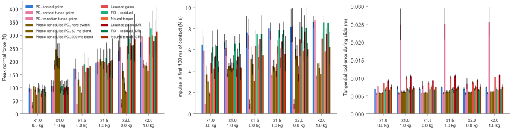

On trajectories that pass through free motion, contact onset, sustained pressing and sliding, and release, at several speeds and payloads, do the learned controllers beat fixed gains and the conventional best practice of phase-specific gains with switching and interpolation? The reference is held fixed; only the controller changes.
Cases are the sustained-contact and transition references of protocol v1 (table and wall) at speed scales 1, 1.5 and 2 and payloads of 0 and 1 kg (8 test cases per cell). The phase-scheduled baseline uses the Milestone 1 per-regime gains (transition gains during approach, release and free phases; contact gains during pressing and sliding), switched at the reference's phase boundaries (oracle phase labels) with linear interpolation over 0, 50 or 200 ms. Learned controllers are the Milestone 2 (nominal) and Milestone 3 (DR) variants, evaluated unchanged.
Twelve cells (two regimes, three speeds, two payloads) with eight test cases each; every controller sees the identical reference in every cell. Impulse, settling and release metrics refer to the first contact onset of the episode; the sustained-contact references additionally contain a 12 cm slide.

| Speed | Payload | Controller | Peak normal force (N) | Impulse in first 100 ms of contact (N s) | Contact losses of 5 ms or more within 0.3 s of onset (-) | Mean normal force in contact phase (N) | Tracking recovery after release (s) | Peak torque rate (Nm/s) | Position RMSE (rad) | Diverged |
|---|---|---|---|---|---|---|---|---|---|---|
| x1.0 | 0.0 kg | PD, shared gains | 97.9 | 6.5 | 0 | 49 | 0.0415 | 1.13e+03 | 0.00616 | 0 |
| x1.0 | 0.0 kg | PD, contact-tuned gains | 95.2 | 5.94 | 0 | 49.4 | 0.0503 | 734 | 0.007 | 0 |
| x1.0 | 0.0 kg | PD, transition-tuned gains | 33.3 | 0.889 | 0.5 | 1.12 | 0.0549 | 366 | 0.0091 | 0 |
| x1.0 | 0.0 kg | Phase-scheduled PD, hard switch | 105 | 3.69 | 0 | 49.8 | 0.0562 | 6.61e+04 | 0.00901 | 0 |
| x1.0 | 0.0 kg | Phase-scheduled PD, 50 ms blend | 92.4 | 3.01 | 0 | 47 | 0.0562 | 1.44e+03 | 0.00894 | 0 |
| x1.0 | 0.0 kg | Phase-scheduled PD, 200 ms blend | 70.8 | 1.89 | 0 | 41.3 | 0.508 | 548 | 0.00969 | 0 |
| x1.0 | 0.0 kg | Learned gains | 98.8 | 4.77 | 0.5 | 41.4 | 0.0483 | 609 | 0.00618 | 0 |
| x1.0 | 0.0 kg | PD + residual | 96.1 | 6.26 | 0.25 | 52.5 | 0.041 | 2.34e+03 | 0.00605 | 0 |
| x1.0 | 0.0 kg | Neural torque | 76.1 | 4.24 | 0.25 | 27.2 | 0.0611 | 2.21e+04 | 0.008 | 0 |
| x1.0 | 0.0 kg | Learned gains (DR) | 94.2 | 5.43 | 0.25 | 48.2 | 0.0498 | 714 | 0.00611 | 0 |
| x1.0 | 0.0 kg | PD + residual (DR) | 94.5 | 6.33 | 0 | 51.7 | 0.0412 | 1.69e+03 | 0.0062 | 0 |
| x1.0 | 0.0 kg | Neural torque (DR) | 82.9 | 4.4 | 0.125 | 23.9 | 0.0765 | 2.04e+04 | 0.01 | 0 |
| x1.0 | 1.0 kg | PD, shared gains | 107 | 6.75 | 0 | 48.7 | 0.0379 | 1.2e+03 | 0.00595 | 0 |
| x1.0 | 1.0 kg | PD, contact-tuned gains | 105 | 6.18 | 0 | 49.7 | 0.0506 | 754 | 0.00701 | 0 |
| x1.0 | 1.0 kg | PD, transition-tuned gains | 187 | 3.81 | 0.875 | 10.8 | 0.838 | 783 | 0.0493 | 0 |
| x1.0 | 1.0 kg | Phase-scheduled PD, hard switch | 245 | 4.45 | 2.25 | 36.7 | 0.838 | 6.05e+04 | 0.0311 | 0 |
| x1.0 | 1.0 kg | Phase-scheduled PD, 50 ms blend | 221 | 4.55 | 1.88 | 33.2 | 0.838 | 6.06e+03 | 0.0309 | 0 |
| x1.0 | 1.0 kg | Phase-scheduled PD, 200 ms blend | 213 | 4.27 | 2.25 | 30.8 | 0.838 | 2.35e+03 | 0.0298 | 0 |
| x1.0 | 1.0 kg | Learned gains | 99.8 | 4.79 | 0 | 38.2 | 0.0446 | 590 | 0.00644 | 0 |
| x1.0 | 1.0 kg | PD + residual | 107 | 6.57 | 0.125 | 52.7 | 0.0383 | 2.27e+03 | 0.00588 | 0 |
| x1.0 | 1.0 kg | Neural torque | 92.5 | 4.19 | 0 | 28.4 | 0.153 | 2.21e+04 | 0.00923 | 0 |
| x1.0 | 1.0 kg | Learned gains (DR) | 99.8 | 5.38 | 0 | 44.5 | 0.0458 | 710 | 0.00635 | 0 |
| x1.0 | 1.0 kg | PD + residual (DR) | 105 | 6.64 | 0 | 51.6 | 0.0391 | 1.62e+03 | 0.00594 | 0 |
| x1.0 | 1.0 kg | Neural torque (DR) | 100 | 4.36 | 0.125 | 27.3 | 0.112 | 2.04e+04 | 0.0109 | 0 |
| x1.5 | 0.0 kg | PD, shared gains | 173 | 7.64 | 0 | 50 | 0.0311 | 1.8e+03 | 0.00663 | 0 |
| x1.5 | 0.0 kg | PD, contact-tuned gains | 171 | 7.39 | 0 | 51.7 | 0.0363 | 1.19e+03 | 0.00758 | 0 |
| x1.5 | 0.0 kg | PD, transition-tuned gains | 37.7 | 0.923 | 0.5 | 1.48 | 0.226 | 373 | 0.00994 | 0 |
| x1.5 | 0.0 kg | Phase-scheduled PD, hard switch | 131 | 5.14 | 0 | 51.8 | 0.0758 | 7.4e+04 | 0.00983 | 0 |
| x1.5 | 0.0 kg | Phase-scheduled PD, 50 ms blend | 104 | 4.65 | 0 | 50.2 | 0.0614 | 1.59e+03 | 0.00977 | 0 |
| x1.5 | 0.0 kg | Phase-scheduled PD, 200 ms blend | 79.3 | 3.08 | 0 | 44.6 | 0.625 | 623 | 0.0116 | 0 |
| x1.5 | 0.0 kg | Learned gains | 182 | 6.37 | 0.25 | 44 | 0.0358 | 1.02e+03 | 0.00684 | 0 |
| x1.5 | 0.0 kg | PD + residual | 187 | 7.46 | 0.5 | 52.1 | 0.0313 | 2.63e+03 | 0.00662 | 0 |
| x1.5 | 0.0 kg | Neural torque | 161 | 5.35 | 0.5 | 23.8 | 0.0499 | 2.31e+04 | 0.00882 | 0 |
| x1.5 | 0.0 kg | Learned gains (DR) | 177 | 7.05 | 0 | 50 | 0.0365 | 1.29e+03 | 0.00659 | 0 |
| x1.5 | 0.0 kg | PD + residual (DR) | 176 | 7.47 | 0.5 | 51.5 | 0.0311 | 2.02e+03 | 0.00674 | 0 |
| x1.5 | 0.0 kg | Neural torque (DR) | 182 | 5.46 | 0.5 | 21.2 | 0.0625 | 2.49e+04 | 0.0112 | 0 |
| x1.5 | 1.0 kg | PD, shared gains | 195 | 8.01 | 0 | 49.2 | 0.0281 | 1.98e+03 | 0.00617 | 0 |
| x1.5 | 1.0 kg | PD, contact-tuned gains | 198 | 7.74 | 0 | 51.4 | 0.0366 | 1.27e+03 | 0.00733 | 0 |
| x1.5 | 1.0 kg | PD, transition-tuned gains | 197 | 3.67 | 1.12 | 9.94 | 0.733 | 830 | 0.0455 | 0 |
| x1.5 | 1.0 kg | Phase-scheduled PD, hard switch | 208 | 4.49 | 1.5 | 34.9 | 0.733 | 4.65e+04 | 0.0275 | 0 |
| x1.5 | 1.0 kg | Phase-scheduled PD, 50 ms blend | 199 | 4.38 | 1.62 | 34.5 | 0.733 | 3.81e+03 | 0.0272 | 0 |
| x1.5 | 1.0 kg | Phase-scheduled PD, 200 ms blend | 200 | 4.02 | 2.62 | 32.4 | 0.733 | 1.34e+03 | 0.0239 | 0 |
| x1.5 | 1.0 kg | Learned gains | 197 | 6.3 | 0 | 38.4 | 0.0326 | 1e+03 | 0.00663 | 0 |
| x1.5 | 1.0 kg | PD + residual | 211 | 7.86 | 0.5 | 51.4 | 0.0296 | 2.59e+03 | 0.00622 | 0 |
| x1.5 | 1.0 kg | Neural torque | 186 | 5.27 | 0.5 | 24.7 | 0.192 | 2.39e+04 | 0.00919 | 0 |
| x1.5 | 1.0 kg | Learned gains (DR) | 193 | 6.81 | 0 | 43.4 | 0.0331 | 1.27e+03 | 0.00644 | 0 |
| x1.5 | 1.0 kg | PD + residual (DR) | 201 | 7.9 | 0 | 50.6 | 0.0299 | 2.1e+03 | 0.00627 | 0 |
| x1.5 | 1.0 kg | Neural torque (DR) | 204 | 5.62 | 0.75 | 25.3 | 0.15 | 2.45e+04 | 0.0111 | 0 |
| x2.0 | 0.0 kg | PD, shared gains | 241 | 8.16 | 0 | 51.2 | 0.0282 | 2.48e+03 | 0.00692 | 0 |
| x2.0 | 0.0 kg | PD, contact-tuned gains | 254 | 8.26 | 0 | 54.7 | 0.0325 | 1.71e+03 | 0.00797 | 0 |
| x2.0 | 0.0 kg | PD, transition-tuned gains | 39.5 | 0.933 | 0.5 | 2.02 | 0.268 | 374 | 0.0103 | 0 |
| x2.0 | 0.0 kg | Phase-scheduled PD, hard switch | 164 | 6.1 | 0 | 52.4 | 0.0752 | 7.74e+04 | 0.0102 | 0 |
| x2.0 | 0.0 kg | Phase-scheduled PD, 50 ms blend | 117 | 5.42 | 0 | 50.8 | 0.0675 | 1.72e+03 | 0.0101 | 0 |
| x2.0 | 0.0 kg | Phase-scheduled PD, 200 ms blend | 82.1 | 3.77 | 0 | 46 | 0.605 | 644 | 0.0124 | 0 |
| x2.0 | 0.0 kg | Learned gains | 259 | 6.98 | 0 | 44.9 | 0.0328 | 1.44e+03 | 0.00724 | 0 |
| x2.0 | 0.0 kg | PD + residual | 287 | 8.15 | 0.5 | 53.1 | 0.0289 | 3.31e+03 | 0.00698 | 0 |
| x2.0 | 0.0 kg | Neural torque | 268 | 5.91 | 0.75 | 22 | 0.0467 | 3.02e+04 | 0.00917 | 0 |
| x2.0 | 0.0 kg | Learned gains (DR) | 260 | 7.69 | 0 | 51 | 0.0334 | 1.9e+03 | 0.00691 | 0 |
| x2.0 | 0.0 kg | PD + residual (DR) | 262 | 8.08 | 0.5 | 52.2 | 0.0286 | 2.8e+03 | 0.00703 | 0 |
| x2.0 | 0.0 kg | Neural torque (DR) | 284 | 6.02 | 0.625 | 20.2 | 0.0589 | 2.99e+04 | 0.0119 | 0 |
| x2.0 | 1.0 kg | PD, shared gains | 272 | 8.59 | 0 | 50.4 | 0.0259 | 2.62e+03 | 0.00635 | 0 |
| x2.0 | 1.0 kg | PD, contact-tuned gains | 295 | 8.74 | 0 | 54.6 | 0.0329 | 1.83e+03 | 0.0076 | 0 |
| x2.0 | 1.0 kg | PD, transition-tuned gains | 190 | 3.47 | 1.75 | 9.34 | 0.708 | 823 | 0.0439 | 0 |
| x2.0 | 1.0 kg | Phase-scheduled PD, hard switch | 185 | 4.72 | 0.625 | 35 | 0.708 | 4e+04 | 0.0269 | 0 |
| x2.0 | 1.0 kg | Phase-scheduled PD, 50 ms blend | 182 | 4.29 | 0.875 | 34.3 | 0.708 | 3.09e+03 | 0.0263 | 0 |
| x2.0 | 1.0 kg | Phase-scheduled PD, 200 ms blend | 165 | 3.73 | 1.88 | 31.2 | 0.708 | 1.12e+03 | 0.0219 | 0 |
| x2.0 | 1.0 kg | Learned gains | 293 | 7.07 | 0 | 39 | 0.0493 | 1.45e+03 | 0.00676 | 0 |
| x2.0 | 1.0 kg | PD + residual | 326 | 8.56 | 0.5 | 51.5 | 0.0274 | 3.51e+03 | 0.00645 | 0 |
| x2.0 | 1.0 kg | Neural torque | 300 | 5.85 | 0.875 | 21.5 | 0.23 | 2.56e+04 | 0.00913 | 0 |
| x2.0 | 1.0 kg | Learned gains (DR) | 278 | 7.51 | 0 | 43.2 | 0.0299 | 1.77e+03 | 0.0065 | 0 |
| x2.0 | 1.0 kg | PD + residual (DR) | 296 | 8.53 | 0.5 | 51 | 0.0272 | 2.94e+03 | 0.00646 | 0 |
| x2.0 | 1.0 kg | Neural torque (DR) | 313 | 6.26 | 1 | 22 | 0.195 | 2.85e+04 | 0.0112 | 0 |
| Speed | Payload | Controller | Peak normal force (N) | Tangential tool error during slide (m) | Normal force std in contact phase (N) | Contact losses of 5 ms or more during contact phase (-) | Mean normal force in contact phase (N) | Peak torque rate (Nm/s) | Position RMSE (rad) | Diverged |
|---|---|---|---|---|---|---|---|---|---|---|
| x1.0 | 0.0 kg | PD, shared gains | 45.1 | 0.00695 | 7.55 | 0.25 | 23.6 | 748 | 0.00502 | 0 |
| x1.0 | 0.0 kg | PD, contact-tuned gains | 45.2 | 0.0056 | 7.14 | 0 | 27.9 | 417 | 0.0054 | 0 |
| x1.0 | 0.0 kg | PD, transition-tuned gains | 22.2 | 0.00765 | 1.46 | 57.5 | 0.247 | 373 | 0.00603 | 0 |
| x1.0 | 0.0 kg | Phase-scheduled PD, hard switch | 38.3 | 0.00583 | 6.68 | 0.125 | 25.1 | 4.26e+04 | 0.00608 | 0 |
| x1.0 | 0.0 kg | Phase-scheduled PD, 50 ms blend | 35.5 | 0.00583 | 6.85 | 0.125 | 25 | 858 | 0.00607 | 0 |
| x1.0 | 0.0 kg | Phase-scheduled PD, 200 ms blend | 35.4 | 0.00584 | 7.62 | 0.125 | 24.4 | 387 | 0.00604 | 0 |
| x1.0 | 0.0 kg | Learned gains | 46.2 | 0.00867 | 8.11 | 6.75 | 19.4 | 393 | 0.0053 | 0 |
| x1.0 | 0.0 kg | PD + residual | 49.4 | 0.00673 | 8.07 | 0 | 26.9 | 2.26e+03 | 0.00489 | 0 |
| x1.0 | 0.0 kg | Neural torque | 37.2 | 0.00741 | 9.5 | 31 | 15.5 | 1.99e+04 | 0.00538 | 0 |
| x1.0 | 0.0 kg | Learned gains (DR) | 45.3 | 0.00924 | 9.14 | 1.88 | 23.7 | 417 | 0.00537 | 0 |
| x1.0 | 0.0 kg | PD + residual (DR) | 46.5 | 0.00663 | 7.98 | 0 | 25.5 | 1.65e+03 | 0.00491 | 0 |
| x1.0 | 0.0 kg | Neural torque (DR) | 49.9 | 0.00745 | 9.25 | 8 | 23.1 | 1.86e+04 | 0.00591 | 0 |
| x1.0 | 1.0 kg | PD, shared gains | 59.1 | 0.00738 | 9 | 0 | 34.9 | 755 | 0.00545 | 0 |
| x1.0 | 1.0 kg | PD, contact-tuned gains | 58.2 | 0.00574 | 8.1 | 0 | 38.7 | 424 | 0.00567 | 0 |
| x1.0 | 1.0 kg | PD, transition-tuned gains | 110 | 0.0249 | 6.43 | 31.6 | 12.5 | 572 | 0.0346 | 0 |
| x1.0 | 1.0 kg | Phase-scheduled PD, hard switch | 121 | 0.0061 | 10 | 1 | 34 | 6.71e+04 | 0.0118 | 0 |
| x1.0 | 1.0 kg | Phase-scheduled PD, 50 ms blend | 132 | 0.00611 | 10.6 | 1 | 33.7 | 3.09e+03 | 0.0118 | 0 |
| x1.0 | 1.0 kg | Phase-scheduled PD, 200 ms blend | 110 | 0.00612 | 10.7 | 1 | 33.2 | 833 | 0.0117 | 0 |
| x1.0 | 1.0 kg | Learned gains | 64 | 0.0101 | 10.5 | 3.38 | 32.1 | 396 | 0.00652 | 0 |
| x1.0 | 1.0 kg | PD + residual | 67 | 0.00678 | 9.9 | 0 | 38.5 | 2.17e+03 | 0.00521 | 0 |
| x1.0 | 1.0 kg | Neural torque | 57.8 | 0.00659 | 13.8 | 2.62 | 30.2 | 1.99e+04 | 0.00818 | 0 |
| x1.0 | 1.0 kg | Learned gains (DR) | 61.5 | 0.0105 | 12.2 | 2.75 | 36.9 | 424 | 0.00656 | 0 |
| x1.0 | 1.0 kg | PD + residual (DR) | 63.7 | 0.00669 | 9.79 | 0 | 37.1 | 1.57e+03 | 0.00519 | 0 |
| x1.0 | 1.0 kg | Neural torque (DR) | 63.6 | 0.00722 | 11.2 | 2.88 | 35.8 | 1.86e+04 | 0.00763 | 0 |
| x1.5 | 0.0 kg | PD, shared gains | 48.8 | 0.00698 | 10.6 | 5 | 24 | 748 | 0.00482 | 0 |
| x1.5 | 0.0 kg | PD, contact-tuned gains | 50.1 | 0.00565 | 10.3 | 1.5 | 28.3 | 421 | 0.0052 | 0 |
| x1.5 | 0.0 kg | PD, transition-tuned gains | 30 | 0.00788 | 1.71 | 33.4 | 0.255 | 394 | 0.00619 | 0 |
| x1.5 | 0.0 kg | Phase-scheduled PD, hard switch | 46 | 0.00589 | 9.86 | 2.25 | 25 | 4.26e+04 | 0.00604 | 0 |
| x1.5 | 0.0 kg | Phase-scheduled PD, 50 ms blend | 44.7 | 0.00589 | 9.97 | 2.12 | 24.8 | 858 | 0.00602 | 0 |
| x1.5 | 0.0 kg | Phase-scheduled PD, 200 ms blend | 44.7 | 0.0059 | 10.6 | 3.25 | 24.1 | 394 | 0.00599 | 0 |
| x1.5 | 0.0 kg | Learned gains | 49.3 | 0.0087 | 10.7 | 20.2 | 19.8 | 393 | 0.00507 | 0 |
| x1.5 | 0.0 kg | PD + residual | 52.3 | 0.0068 | 11 | 3.12 | 27.4 | 2.26e+03 | 0.00471 | 0 |
| x1.5 | 0.0 kg | Neural torque | 43.6 | 0.00738 | 11.5 | 36.8 | 16 | 1.99e+04 | 0.00524 | 0 |
| x1.5 | 0.0 kg | Learned gains (DR) | 49.5 | 0.00929 | 11.8 | 13.9 | 24.2 | 417 | 0.00515 | 0 |
| x1.5 | 0.0 kg | PD + residual (DR) | 50.3 | 0.00669 | 11 | 5.62 | 25.9 | 1.65e+03 | 0.00474 | 0 |
| x1.5 | 0.0 kg | Neural torque (DR) | 51.3 | 0.0075 | 11.7 | 14.5 | 23.6 | 1.86e+04 | 0.00587 | 0 |
| x1.5 | 1.0 kg | PD, shared gains | 62.2 | 0.00743 | 12.6 | 2.88 | 35.5 | 755 | 0.00529 | 0 |
| x1.5 | 1.0 kg | PD, contact-tuned gains | 62.5 | 0.00579 | 11.7 | 0.25 | 39.2 | 429 | 0.0055 | 0 |
| x1.5 | 1.0 kg | PD, transition-tuned gains | 110 | 0.0251 | 8.56 | 41.9 | 12.5 | 572 | 0.0342 | 0 |
| x1.5 | 1.0 kg | Phase-scheduled PD, hard switch | 121 | 0.00618 | 13.5 | 1.5 | 33.6 | 6.71e+04 | 0.0126 | 0 |
| x1.5 | 1.0 kg | Phase-scheduled PD, 50 ms blend | 132 | 0.00619 | 14 | 1.25 | 33.2 | 3.09e+03 | 0.0126 | 0 |
| x1.5 | 1.0 kg | Phase-scheduled PD, 200 ms blend | 110 | 0.00621 | 14.1 | 1.88 | 32.6 | 833 | 0.0124 | 0 |
| x1.5 | 1.0 kg | Learned gains | 66.1 | 0.0102 | 13.7 | 11.9 | 32.7 | 396 | 0.00634 | 0 |
| x1.5 | 1.0 kg | PD + residual | 68.1 | 0.00687 | 13.3 | 0.875 | 39.3 | 2.17e+03 | 0.00507 | 0 |
| x1.5 | 1.0 kg | Neural torque | 61.1 | 0.0066 | 16.5 | 14.8 | 31 | 1.99e+04 | 0.00826 | 0 |
| x1.5 | 1.0 kg | Learned gains (DR) | 64.8 | 0.0106 | 15.3 | 8.38 | 37.7 | 424 | 0.00637 | 0 |
| x1.5 | 1.0 kg | PD + residual (DR) | 65.5 | 0.00678 | 13.2 | 1.25 | 37.8 | 1.57e+03 | 0.00506 | 0 |
| x1.5 | 1.0 kg | Neural torque (DR) | 64.5 | 0.00733 | 14.1 | 8.75 | 36.2 | 1.86e+04 | 0.00772 | 0 |
| x2.0 | 0.0 kg | PD, shared gains | 57 | 0.00699 | 13 | 12.6 | 24.2 | 765 | 0.00468 | 0 |
| x2.0 | 0.0 kg | PD, contact-tuned gains | 57.7 | 0.00566 | 13 | 6 | 28.5 | 442 | 0.00505 | 0 |
| x2.0 | 0.0 kg | PD, transition-tuned gains | 36.7 | 0.00838 | 1.92 | 21.2 | 0.257 | 424 | 0.00638 | 0 |
| x2.0 | 0.0 kg | Phase-scheduled PD, hard switch | 55.8 | 0.00591 | 12.6 | 7.38 | 24.8 | 4.26e+04 | 0.00599 | 0 |
| x2.0 | 0.0 kg | Phase-scheduled PD, 50 ms blend | 55.9 | 0.00592 | 12.6 | 7 | 24.5 | 858 | 0.00597 | 0 |
| x2.0 | 0.0 kg | Phase-scheduled PD, 200 ms blend | 55.5 | 0.00593 | 13.2 | 6.5 | 23.7 | 419 | 0.00594 | 0 |
| x2.0 | 0.0 kg | Learned gains | 58 | 0.00876 | 12.7 | 24.4 | 19.9 | 399 | 0.0049 | 0 |
| x2.0 | 0.0 kg | PD + residual | 59.2 | 0.00683 | 13.5 | 10.4 | 27.6 | 2.26e+03 | 0.00458 | 0 |
| x2.0 | 0.0 kg | Neural torque | 51.5 | 0.00737 | 12.9 | 37 | 16.3 | 1.99e+04 | 0.00515 | 0 |
| x2.0 | 0.0 kg | Learned gains (DR) | 58.1 | 0.00934 | 13.9 | 18.8 | 24.5 | 437 | 0.00497 | 0 |
| x2.0 | 0.0 kg | PD + residual (DR) | 57.6 | 0.00672 | 13.4 | 11.8 | 26.2 | 1.65e+03 | 0.00462 | 0 |
| x2.0 | 0.0 kg | Neural torque (DR) | 60.1 | 0.00757 | 13.7 | 21.6 | 24 | 1.86e+04 | 0.00586 | 0 |
| x2.0 | 1.0 kg | PD, shared gains | 70.2 | 0.00747 | 15.6 | 7.25 | 35.7 | 766 | 0.00517 | 0 |
| x2.0 | 1.0 kg | PD, contact-tuned gains | 72 | 0.00582 | 15.1 | 5.25 | 39.5 | 439 | 0.00538 | 0 |
| x2.0 | 1.0 kg | PD, transition-tuned gains | 110 | 0.0255 | 10 | 41.9 | 12.6 | 572 | 0.0337 | 0 |
| x2.0 | 1.0 kg | Phase-scheduled PD, hard switch | 121 | 0.00622 | 16.5 | 6 | 33.2 | 6.71e+04 | 0.0131 | 0 |
| x2.0 | 1.0 kg | Phase-scheduled PD, 50 ms blend | 132 | 0.00624 | 17.1 | 6.62 | 32.8 | 3.09e+03 | 0.0131 | 0 |
| x2.0 | 1.0 kg | Phase-scheduled PD, 200 ms blend | 110 | 0.00625 | 17.1 | 5.25 | 32 | 833 | 0.0129 | 0 |
| x2.0 | 1.0 kg | Learned gains | 77.2 | 0.0103 | 16.3 | 15.6 | 33.1 | 409 | 0.00621 | 0 |
| x2.0 | 1.0 kg | PD + residual | 75.7 | 0.00694 | 16.3 | 6.25 | 39.7 | 2.17e+03 | 0.00497 | 0 |
| x2.0 | 1.0 kg | Neural torque | 69.8 | 0.00662 | 18.7 | 21.2 | 31.5 | 1.99e+04 | 0.00831 | 0 |
| x2.0 | 1.0 kg | Learned gains (DR) | 75.2 | 0.0107 | 17.9 | 12.1 | 38.2 | 448 | 0.00623 | 0 |
| x2.0 | 1.0 kg | PD + residual (DR) | 74 | 0.00684 | 16.2 | 7.62 | 38.2 | 1.57e+03 | 0.00496 | 0 |
| x2.0 | 1.0 kg | Neural torque (DR) | 73.3 | 0.00747 | 16.6 | 12.1 | 36.5 | 1.86e+04 | 0.00778 | 0 |
Re-run the grid with protocol v2 learned controllers and with per-phase gains tuned under a press-phase requirement; add force-triggered switching as the realistic scheduled baseline; and include a 5 ms actuation delay in the plant, which Milestone 3 showed to be decisive for stiff gain sets.